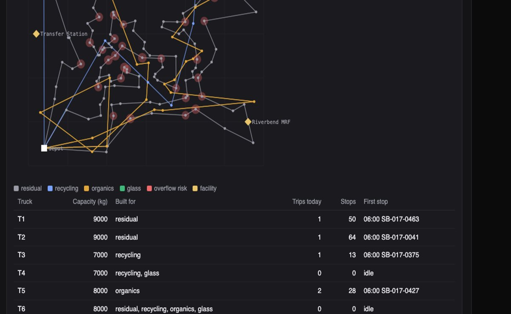
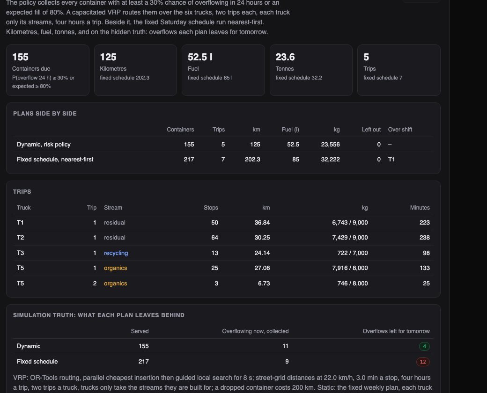

Python · OR-Tools VRP · Linear programming · 2026-10
Which Bins Overflow This Weekend?
Waste operations over an invented district of 500 smart containers on a festival Saturday: overflow risk from each container's own fill rates, dynamic routes that drive 125 km against the fixed schedule's 202 and leave 4 overflows instead of 12, a conveyor classifier that calls itself a toy, and loads placed where they are worth most within what each plant can take.

Built from a written blueprint as one vertical slice. The district is simulated: containers, readings, trucks, facilities, prices and conveyor frames come from a generator in the repository, streets are a grid, and the festival is injected by telling the generator, which is what lets every risk list and route be scored against the truth. The classifier works on coloured rectangles and says so. No language model is used. Not built: real sensors, a road network, real images, time windows, an event calendar, a crew app, Kafka, Terraform, single sign-on.
01 — The problem
A city empties its bins on a schedule written years ago: some are collected a third full, some overflow on a Saturday because a park filled up or a festival came to town. Smart sensors say how full each bin is now; the questions are which will overflow before the next truck, where the trucks should actually go, what is coming down the recycling line, and where a full truck should tip when the nearest plant is full. Can software forecast overflow from each bin's own history, route to need instead of schedule, and send material where it is worth most, while being honest about what a toy classifier is?
Blueprint 11 of fifteen in a third build book, built as its demo scenario end to end.
02 — What I built
A Python service on PostgreSQL with a background worker and a web page, started by one docker compose up.
- A gateway that validates each reading on its own, and a poll that stands in for the feed.
- Fill rates by weekday per container and an overflow risk list at 8, 24 and 48 hours, scored against the truth.
- A capacitated VRP (OR-Tools) with one stream per trip, against the fixed schedule run nearest-first, both scored on overflows left behind.
- A toy conveyor classifier with a contamination alert, labelled a toy wherever it appears.
- A destination linear programme: value less haul within each facility's remaining capacity, against the nearest-plant rule.
03 — How it was built
- 01
A district whose schedule fits its bins, until the weekend
500 containers on a 6 km grid: residential, commercial, park and venue sites across residual, recycling, organics and glass, each with a fill rate the fixed weekly schedule was designed for (about two-thirds full between collections on an ordinary week), a weekday pattern (parks and the venue fill at weekends, shops on weekdays), six-hourly readings with sensor noise and weak batteries, and pickups at 08:00 on scheduled weekdays. Over eight weeks, 3.9% of pickups find an overflowing bin. Then a festival triples the rates near the venue from Friday evening.
base = 65.0 * r.uniform(0.7, 1.15) / steps / np.mean(DOW[t]) # the schedule was designed for the bin - 02
Risk from each bin's own history, and where that fails
For each container and weekday, the median six-hour increment between consecutive readings with no pickup between them, projected from the last reading with the spread as noise. Saturday 06:00: 52 containers at 50% or more, the venue's mean risk 55% against 5% on residential streets. The truth is shown beside the list: 54 would overflow if nothing were collected; 41 caught, 11 false, 13 missed. The misses are the festival's bins, filling faster than anything in their history, and the page says so instead of hiding them.
p = 0.5 * (1 - erf((100 - f) / (sqrt(2) * s))) - 03
Route to need, not to schedule
The policy collects any container with a 30% chance of overflowing in 24 hours or an expected fill of 80%: 155 of them. OR-Tools routes them over six trucks, one stream per trip, four hours a trip, each truck only its streams, grid distances at 22 km/h. The result: 5 trips, 125 km, 52 litres. The fixed Saturday schedule run nearest-first: 217 containers, 7 trips, 202 km, 85 litres, one truck over its shift. On the truth, the dynamic plan leaves 4 containers to overflow by Sunday morning; the schedule leaves 12, because it empties bins a third full and skips the ones the weekend filled.
routing.VehicleVar(mgr.NodeToIndex(k)).SetValues([-1] + allowed) # only trips built for this stream routing.AddDisjunction([mgr.NodeToIndex(k)], 200_000) # dropping a bin costs 200 km - 04
A classifier that knows it is a toy
Conveyor frames are coloured rectangles on a dark belt: paper, plastic, metal, organics, glass, and contamination as black film with red specks. Colour histograms into gradient-boosted trees score 100% on held-out frames, and every place that number appears says it means the frames are easy. Twelve frames from the recycling line: three contamination, 25% of the batch, and the alert fires at 10%.
"method": "colour histograms of a schematic conveyor frame into gradient-boosted trees; a toy on synthetic images, not a vision model for real cameras" - 05
Where a full truck tips
Each planned trip's material is a load with a stream, a weight and a position. A linear programme places every load, splits allowed, so that no facility takes more than it has left today and haul cost less material value (price times recovery yield; the transfer station charges a gate fee) is lowest. Northgate MRF reaches its daily capacity and the rest of the recycling goes on to Riverbend MRF; organics go to the compost plant though the transfer station is closer. The nearest-accepting-facility rule would have sent every load to the transfer station: −$2,244 of material value against −$1,209, nothing recovered against 9.4 tonnes.
res = linprog(cost, A_ub=capacity_rows, b_ub=remaining_kg, A_eq=one_per_load, b_eq=ones, bounds=(0, 1), method="highs")
04 — Results
The demo. Dynamic routes against the fixed schedule, scored on the truth:

Today's routes drawn on the district, with overflow risk as red circles and the facilities marked:
On three other simulated districts, five weekdays each:
| System | Baseline | |
|---|---|---|
| Fill 24 h ahead, error (points) | 3.6–4.0 | 3.3–3.7 constant rate |
| Overflow list, recall / precision | 94–97% / 96–99% | – |
| Kilometres a day | 135–137 | 205–221 fixed schedule |
| Overflows left for tomorrow | 1.8–3.4 | 6.8–8.6 fixed schedule |
| Toy classifier accuracy | 100% | 20–22% majority class |
| Destination value less haul, per six loads | +$445–640 | nearest-plant rule |
Weekday fill rates were no better than a constant rate on weekdays, and only earn their place where weekends differ; the demo's own back-test, with a weekend in it, has them ahead (3.0 against 5.3 points). Dynamic routing's gain is real and comes from not visiting bins a third full. The classifier's perfect score is a property of the pictures.
Honest limits. A grid at constant speed is the whole road model; trips are not chained in time; the festival is the case the risk model handles worst, and the page shows the 13 bins it missed.
Checks. 10 tests, including: the festival raises fill only where and when it should and there are no Sunday collections, the risk list is ordered and its horizons nest, every VRP trip respects capacity, stream and the four-hour cap and the plan beats the schedule on overflows, the destination LP never exceeds a facility's remaining capacity, an unknown sensor, a 140% reading and a future timestamp are refused, and one operator cannot see another's district.
05 — What I'd do next
- A shared fill model across containers with site features and an event calendar, so a festival moves the venue's forecast before its bins are full.
- Trips chained in time within a shift, and a second depot.
- A real public image set for the classifier, with the honest number that follows.